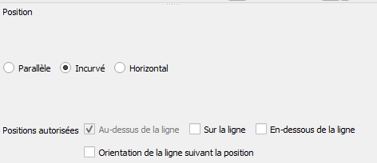
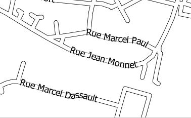
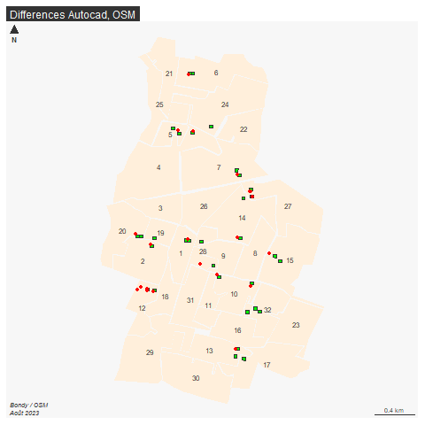

Faire une 1e saisie sous OSM d’un bureau de vote s’il est manquant.
https://taginfo.openstreetmap.org/
exercice : faire une saisie sur un point connu
highway = * in BondyCela tombe bien, les rues permettent de définir les secteurs des bureaux de vote
Savoir-faire QGIS :
mettre un favori dans l’explorateur sur le répertoire Téléchargement
intégrer une couche dans Qgis
étiquetage des rues sous Qgis

résultat

Que chaque stagiaire essaie de faire la carte en fonction de ce qu’il sait faire. En amont, remplissage d’un tableau sur les 3 points
Dans overpass, observer la mairie de Bondy, quels sont les tags correspondant au bureau de vote ?
Dans taginfo, constater l’aire d’utilisation des tags et les combinaisons possibles.
Avec l’assistant, essayer
- polling_station=yes
- polling_station_ref=*
- ~polling~".*"Que signifie la dernière requête ? s’aider de l’aide de l’assistant d’overpass.
Effectuer cette requête sur l’ensemble de la France, que permet-elle de voir ?
library(sf)
library(mapsf)
st_layers("data/vote.gpkg")
# Combien de bureaux ?
bvAutocad <- st_read("data/vote.gpkg", "bureauxPoly")
bvOpendata <- read.csv("data/bvOpendata.csv")
str(bvOpendata)
# pas de coordonnées, il faut géocoder. Cette liste servira juste de vérification.
zoneAutocad <- st_read("data/vote.gpkg", "bureauPolyZone")
zoneAutocad <- zoneAutocad [, c("numBureau","bureauNo_1")]
names(zoneAutocad)[2]<-"nom"
st_write(zoneAutocad, "data/vote.gpkg", "bureauPolyZone", delete_layer = T)
zoneMakina <- st_read("data/vote.gpkg", "bvMakina")Faire la carte sous QGIS en essayant de repérer les bureaux manquants sous OSM
carte uniquement sur son secteur
données dans vote.gpkg
## Linking to GEOS 3.9.3, GDAL 3.5.2, PROJ 8.2.1; sf_use_s2() is TRUE## Driver: GPKG
## Available layers:
## layer_name geometry_type features fields crs_name
## 1 bureauxPoly Multi Polygon 32 4 RGF93 v1 / Lambert-93
## 2 bvMakina Multi Polygon 32 4 RGF93 v1 / Lambert-93
## 3 monSecteur Multi Polygon 1 2 RGF93 v1 / Lambert-93
## 4 resultat Multi Polygon 32 6 RGF93 v1 / Lambert-93
## 5 bureauPolyZone Multi Polygon 32 3 RGF93 v1 / Lambert-93png("img/bv.png")
mf_map(zoneAutocad, col = "antiquewhite1", border = NA)
mf_label(zoneAutocad, var = "numBureau")
mf_map(bvAutocad, col = "green", add = T)
#mf_label(bvAutocad, var = "Layer", col = "green", halo = T, bg= "antiquewhite4",
# overlap = F, pos = 2)
mf_map(bvOSM, col= "red",add = T)
mf_layout("Differences Autocad, OSM", credits = "Bondy / OSM\nAoût 2023")
dev.off()
Les bureaux sont-ils dans les zones ?
Y-a-t-il des bureaux manquants ?
Est-il possible de repérer les manques dans la saisie d’OSM afin de mieux viser les zones à se répartir ?
export <- st_transform(zoneAutocad [, c("numBureau", "nom")], crs=4326)
export$etudiant <- NA
st_write(export, "data/exportBV5.geojson")https://umap.openstreetmap.fr/fr/map/paris8-bondy2023_953589
http://resultmaps.neis-one.org
http://osmose.openstreetmap.fr/fr/map/#zoom=16&lat=48.90695&lon=2.49237
et plus…
cours Paris8-Bondy2023 - bureaux de vote